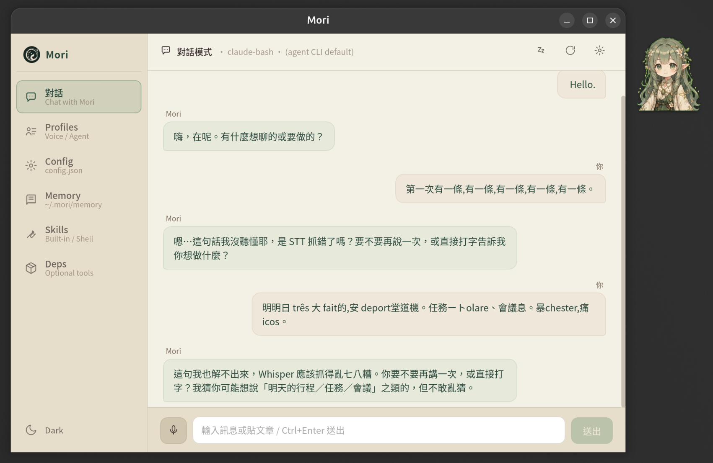
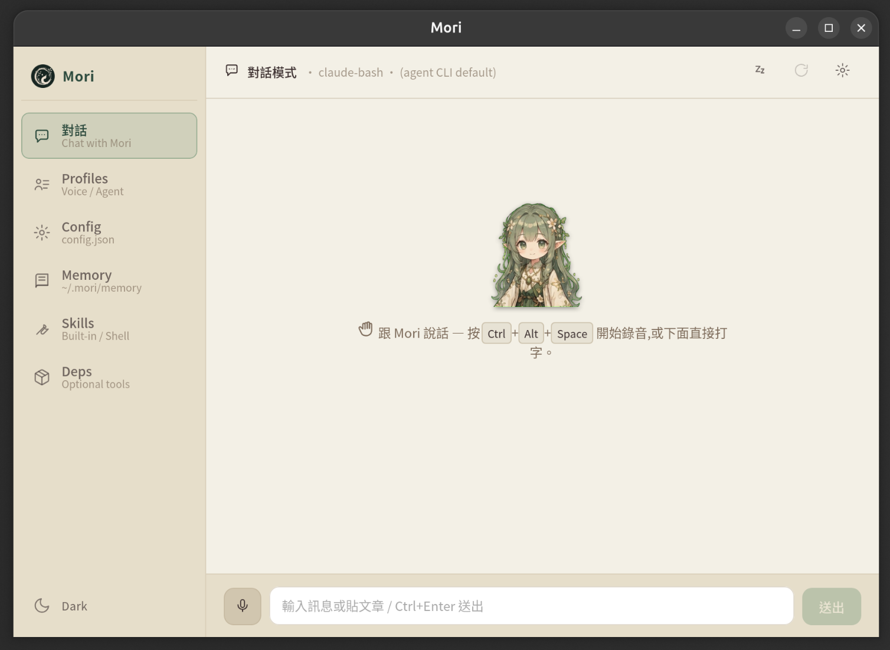
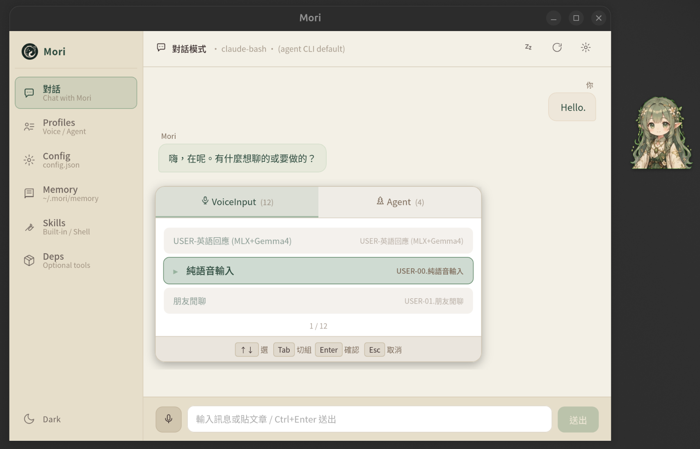
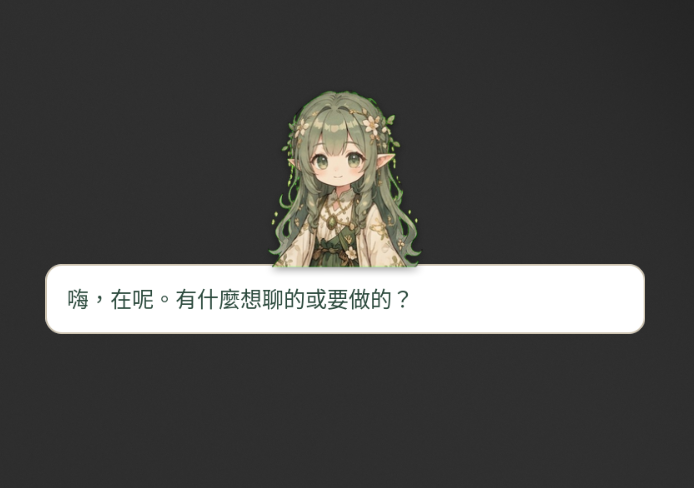
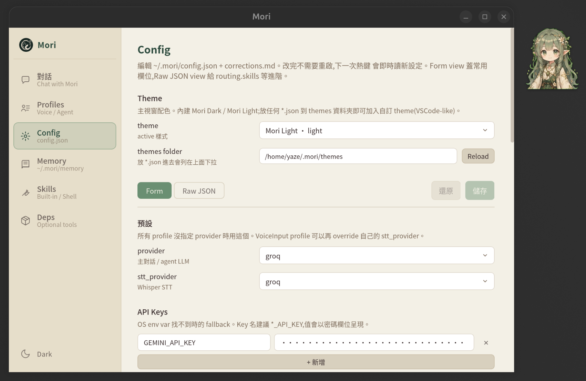
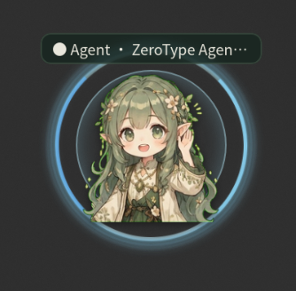
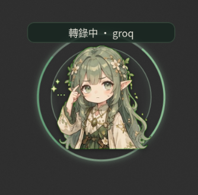

Mori
DOCS
從 0 到 Mori 在你 Ubuntu 上跑起來 — 三步驟。
wl-clipboard + ydotoolxdg-desktop-portal ≥ 1.19 — 才有
org.freedesktop.host.portal.Registry interface;
Ubuntu 24.04 LTS 自帶 1.18 不夠新,會掛在「register host app id with xdg-desktop-portal Registry」
錯誤,只能用 UI toggle 按鈕觸發,詳見
Troubleshooting → portal Registry 找不到。
Ubuntu 26.04 一條龍 setup script:
yazelin/ubuntu-26.04-setup
./setup-rust.sh # Rust toolchain
./setup-tauri-deps.sh # WebKitGTK + ALSA + tray libs
./setup-wayland-input.sh # wl-clipboard + ydotool daemon
裝完要重開機一次 讓 input group 生效(ydotool 需要)。
git clone https://github.com/yazelin/mori-desktop.git
cd mori-desktop
npm install
npm run build # 建 dist/ — tauri::generate_context!() 編譯時會檢查這路徑
cargo build --workspace # workspace 才會 build mori-cli (Bash CLI proxy 需要)cargo build 編 mori-tauri 時,
tauri::generate_context!() 巨集會驗證 tauri.conf.json 的
frontendDist(../../dist)路徑存在,所以前端 dist/
必須先建好。fresh clone 直接跑 cargo build 會炸
The `frontendDist` configuration is set to "../../dist" but this path doesn't exist。
npm run tauri dev第一次 build 在 Intel Ultra 上 ~3 分鐘。之後 incremental ~10 秒。
npm run tauri dev 只 build mori-tauri。
mori CLI(Bash CLI proxy 用)要另外跑 cargo build -p mori-cli,
binary 在 target/debug/mori。
主視窗 = sidebar shell(6 個 tab)+ 桌面常駐 floating sprite + Ctrl+Alt+P picker overlay。







~/.mori/ 建立:config.json stub / themes/dark.json / themes/light.json /
voice_input/USER-00 + USER-01 + USER-02 starter / agent/AGENT.md + AGENT-01~04 starter裝完 + provider 設好以後,日常用法 4 個鍵打天下:
hold 即時生效。
詳見 Hotkeys → 自訂熱鍵自訂更多 profile slot(2~9):用同檔名格式 AGENT-NN.<display>.md /
USER-NN.<display>.md 丟到 ~/.mori/agent/ /
~/.mori/voice_input/ 即可(範本見
Profile 範本頁)。